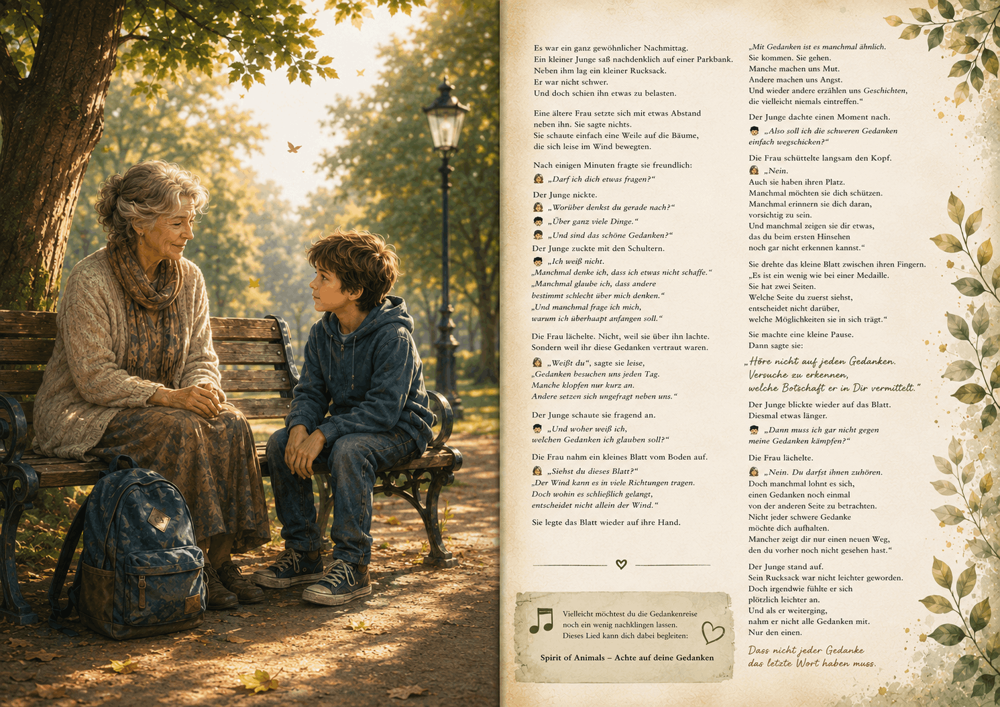

Mobirise.comEine Gedankenreise zum Verschenken

Der Gedanke, der nicht das letzte Wort bekam
Es war ein ganz gewöhnlicher Nachmittag.
Ein kleiner Junge saß nachdenklich auf einer Parkbank.
Neben ihm lag ein kleiner Rucksack.
Er war nicht schwer.
Und doch schien ihn etwas zu belasten.
Eine ältere Frau setzte sich mit etwas Abstand neben ihn.
Sie sagte nichts.
Sie schaute einfach eine Weile auf die Bäume, die sich leise im Wind bewegten.
Nach einigen Minuten fragte sie freundlich:
👩🦱 „Darf ich dich etwas fragen?“
Der Junge nickte.
👩🦱 „Worüber denkst du gerade nach?“
👨🦲„Über ganz viele Dinge.“
👩🦱 „Und sind das schöne Gedanken?“
Der Junge zuckte mit den Schultern.
👨🦲 „Ich weiß nicht.“
„Manchmal denke ich, dass ich etwas nicht schaffe.“
„Manchmal glaube ich, dass andere bestimmt schlecht über mich denken.“
„Und manchmal frage ich mich, warum ich überhaupt anfangen soll.“
Die Frau lächelte.
Nicht, weil sie über ihn lachte.
Sondern weil ihr diese Gedanken vertraut waren.
👩🦱 „Weißt du“, sagte sie leise,
„Gedanken besuchen uns jeden Tag.“
„Manche klopfen nur kurz an.“
„Andere setzen sich ungefragt neben uns.“
Der Junge schaute sie fragend an.
👨🦲 „Und woher weiß ich, welchen Gedanken ich glauben soll?“
Die Frau nahm ein kleines Blatt vom Boden auf.
👩🦱 „Siehst du dieses Blatt?“
„Der Wind kann es in viele Richtungen tragen.“
„Doch wohin es schließlich gelangt, entscheidet nicht allein der Wind.“
Sie legte das Blatt wieder auf ihre Hand.
„Mit Gedanken ist es manchmal ähnlich.“
„Sie kommen.“
„Sie gehen.“
„Manche machen uns Mut.“
„Andere machen uns Angst.“
„Und wieder andere erzählen uns Geschichten, die vielleicht niemals eintreffen.“
Der Junge dachte einen Moment nach.
👨🦲 „Also soll ich die schweren Gedanken einfach wegschicken?“
Die Frau schüttelte langsam den Kopf.
👩🦱 „Nein.“
„Auch sie haben ihren Platz.“
„Manchmal möchten sie dich schützen.“
„Manchmal erinnern sie dich daran, vorsichtig zu sein.“
„Und manchmal zeigen sie dir etwas,
das du beim ersten Hinsehen noch gar nicht erkennen kannst.“
Sie drehte das kleine Blatt zwischen ihren Fingern.
„Es ist ein wenig wie bei einer Medaille.“
„Sie hat zwei Seiten.“
„Welche Seite du zuerst siehst, entscheidet nicht darüber,
welche Möglichkeiten sie in sich trägt.“
Sie machte eine kleine Pause.
Dann sagte sie:
„Höre nicht auf jeden Gedanken.
Versuche zu erkennen, welche Botschaft er in Dir vermittelt.“
Der Junge blickte wieder auf das Blatt.
Diesmal etwas länger.
👨🦲 „Dann muss ich gar nicht gegen meine Gedanken kämpfen?“
Die Frau lächelte.
👩🦱 „Nein.“
„Du darfst ihnen zuhören.“
„Doch manchmal lohnt es sich,
einen Gedanken noch einmal von der anderen Seite zu betrachten.“
„Nicht jeder schwere Gedanke möchte dich aufhalten.“
„Mancher zeigt dir nur einen neuen Weg, den du vorher noch nicht gesehen hast.“
Der Junge stand auf.
Sein Rucksack war nicht leichter geworden.
Doch irgendwie fühlte er sich plötzlich leichter an.
Und als er weiterging, nahm er nicht alle Gedanken mit.
Nur den einen.
Dass nicht jeder Gedanke das letzte Wort haben muss.
🎵 Vielleicht möchtest du die Gedankenreise noch ein wenig nachklingen lassen.
Dieses Lied kann dich dabei begleiten:
Spirit of Animals - Achte auf deine Gedanke
Quelle: YouTube – Originalvideo
https://youtu.be/VO9j9QXJx6E?si=vS4UHfv9rRRjKUVu
Gedanken gehören zu unserem Leben.
Manche schenken uns Zuversicht.
Andere wecken Zweifel.
Diese Geschichte möchte nicht bewerten, welche Gedanken richtig oder falsch sind.
Sie lädt dazu ein, einen kleinen Moment innezuhalten.
Vielleicht lohnt es sich, einem Gedanken nicht sofort zu folgen, sondern erst zu fragen:
Welche Botschaft möchte er in mir mir eigentlich vermitteln?
Manchmal entdecken wir dabei etwas Überraschendes.
Ein Gedanke, der uns im ersten Moment belastet, kann uns im zweiten vielleicht etwas zeigen.
Nicht, weil er angenehm ist.
Sondern weil wir entscheiden dürfen, welcher seiner Seiten wir unsere Aufmerksamkeit schenken.
Vielleicht ist es wie bei einer Medaille.
Sie besitzt zwei Seiten.
Die Medaille bleibt dieselbe.
Doch manchmal verändert der Blick auf ihre andere Seite unseren weiteren Weg.
Diese Gedankenreise entstand aus einem persönlichen Austausch über Herzensprojekte, Zweifel und den Mut, trotzdem weiterzugehen.
Auf jedem Weg begegnen uns Gedanken, die uns antreiben, und Gedanken, die uns bremsen möchten.
Mit der Zeit entstand dabei ein Satz, der zum Mittelpunkt dieser Geschichte wurde:
„Höre nicht auf jeden Gedanken. Versuche zu erkennen, welche Botschaft er in Dir vermittelt möchte.“
Vielleicht liegt darin eine Form von Achtsamkeit.
Nicht jeder Gedanke soll unser Leben bestimmen.
Manche möchten uns schützen.
Manche möchten uns herausfordern.
Und manche zeigen uns erst auf den zweiten Blick etwas, das wir vorher nicht erkennen konnten.
Vielleicht geht es deshalb gar nicht darum, Gedanken in gute oder schlechte einzuteilen.
Vielleicht geht es vielmehr darum, ihnen aufmerksam zuzuhören und selbst zu entscheiden,
welcher ihrer Botschaften wir auf unserem weiteren Weg folgen möchten.
Vielleicht begegnet dir schon heute ein Gedanke, der dich zweifeln lässt.
Vielleicht flüstert er dir zu, dass etwas zu schwer ist, dass du es nicht schaffen wirst oder dass es besser wäre, gar nicht erst anzufangen.
Wenn das geschieht, musst du diesen Gedanken nicht wegschieben.
Vielleicht genügt es, einen Moment innezuhalten und ihn von einer anderen Seite zu betrachten.
Manchmal verbirgt sich gerade in einem schweren Gedanken eine Botschaft, die uns wachsen lässt.
Nicht jeder Gedanke muss das letzte Wort haben.
Doch jeder kann uns einladen, bewusster zu entscheiden, welchen Weg wir als Nächstes gehen möchten.
Ich wünsche dir, dass du den Gedanken begegnest, die dir Mut machen – und den anderen mit der Gelassenheit, ihnen zuzuhören, ohne ihnen sofort folgen zu müssen.
Mobirise.com